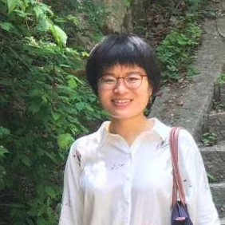

|  | Xuemeng Song |
| Assistant Professor | |
| Department of Computer Science and Technology
Shandong University |
|
| Address： Shandong University, Jimo, Tsingtao, China, 266237 Email： sxmustc at gmail dot com |
| News | Biography | Teaching | Publications | Research |
| News | ||||
| Call for papers: Information Processing and Management Special Issue on Deep Learning for Multi-modal Social Media Analysis and Applications | ||||
| Opening for master students: I am recruiting self-motivated master students to collaborate on research domains such as information retrieval and social media analysis. Students with Bachelor's degrees in CS or other related areas (e.g, Mathematics, Physics, EE, etc.) are all welcome. (Enrollment of 2020 Sep). | ||||
| Biography | ||||
| Xuemeng Song is an Assistant Professor in Shandong University. She got her PhD degree from National University of Singapore (NUS) and her Bacherlor degree from Universitiy of Science and Technology of China (USTC) in 2016 and 2012, respectively. Her research interests are information retrieval and social media analysis. She has published several papers in the top venues, such as SIGIR, MM, IJCAI, AAAI, TOIS and TNNLS. In addition, she has served as reviewers for many top conferences and journals, such as TKDD, TMM, ICMR, and MMM.
| ||||
| Teaching | ||||
|
| ||||
| Publications | ||||
| Research | |||
|
Fashion Analysis towards Clothing Matching According to the Goldman Sachs, the 2016 online retail market of China for fashion products, including apparel, footwear, and accessories, has reached 187.5 billion US dollars, which demonstrates people’s great demand for clothing. In fact, apart from physiological needs, people also have esteem needs of clothes as dressing properly is of importance in daily life. As each outfit usually involves multiple complementary items (e.g., tops, bottoms, and shoes), the key to a proper outfit lies in the harmonious clothing matching to a great extent. However, not everyone is a naturalborn fashion stylist, which makes choosing the matching clothes a tedious and even annoying daily routine. It thus deserves our attention to develop an effective clothing matching scheme to help people figure out the suitable match for a given item and make a harmonious outfit.User Profiling across Multiple Social Networks User profiling, which aims to infer users' unobservable information based on observable information such as individual's behavior or utterances, is the basis for many applications, such as personalized recommendation, and expert finding. Traditional user profiling conducted with traditional medium, such as document records, is always hindered by the limited data sources. Recent years, the proliferation of social media has opened new opportunities for user profiling. Moreover, as different social networks provide different services, increasing number of people are involved in multiple social networks. Different aspects can be revealed by different social networks. Therefore, to comprehensively learn users' profiles, it is time to shift from a single social network to multiple social networks.Privacy Preserving in Social Media The boom of social networks has given rise to a large volume of user-generated contents (UGCs), most of which are freely and publicly available. The potential of using the rich set of UGCs to study people's personal attributes and personalized applications has been widely validated. Despite its value, UGCs can also place users at high privacy risks, which thus far remains largely untapped. Privacy is defined as the individual's ability to control what information is disclosed, to whom, when and under what circumstances. As people and information both play significant roles, privacy has been elaborated as a boundary regulation process, where individuals regulate interaction with others by altering the openness degree of themselves to others. Therefore, we aim to reduce users' privacy risks on social networks by answering the question of Who Can See What. | ||||